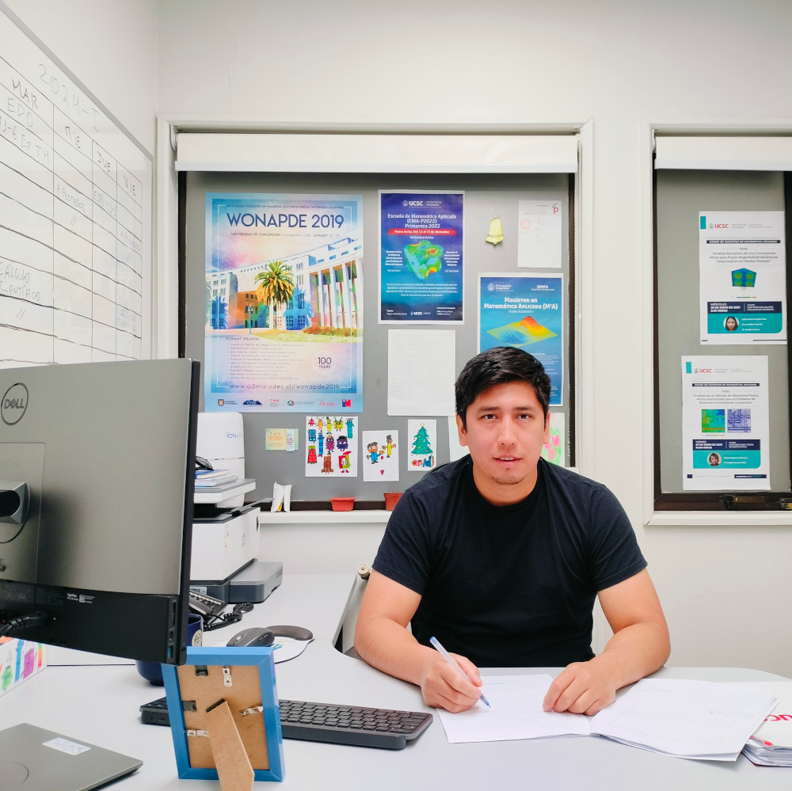

- WoS ResearcherID: IIS-7548-2023
- Scopus ID: 57189042858
- ORCiD: 0000-0001-7811-759X
- MathSciNet ID: 1155968
Research Interests
- Numerical Analysis of Partial Differential Equations
- Mixed Finite Element Methods
- A Priori and A Posteriori Error Analysis
- Scientific Computing
- Fluid Mechanics
- Fluid-Poroelastic Structure Interaction
- Magnetohydrodynamics
Contact Details
Departamento de Matemática y Física Aplicadas
Facultad de Ingeniería
Universidad Católica de la Santísima Concepción
Casilla 297
Concepción, Chile
e-mail: scaucao [at] ucsc [dot] cl
phone: +56 41234 7123